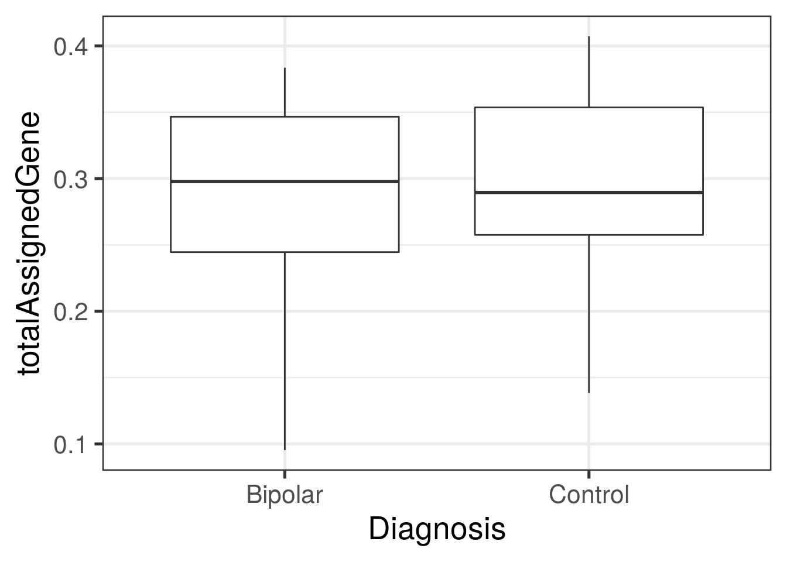
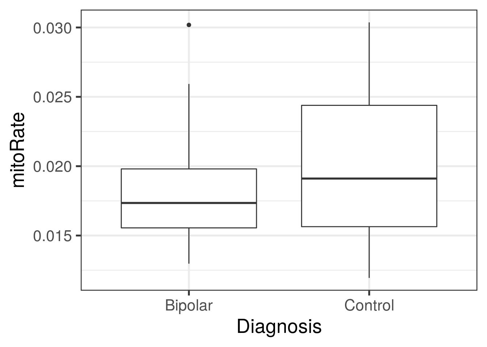
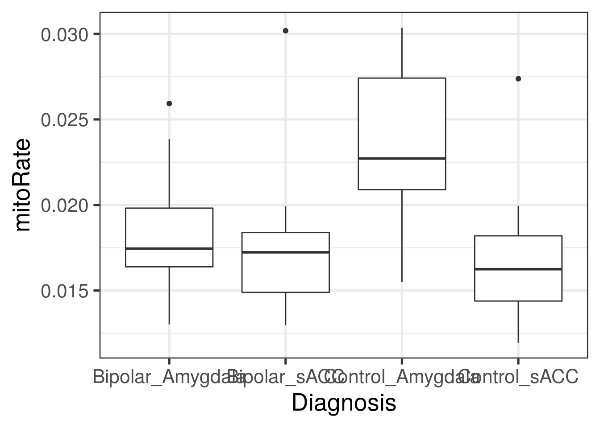
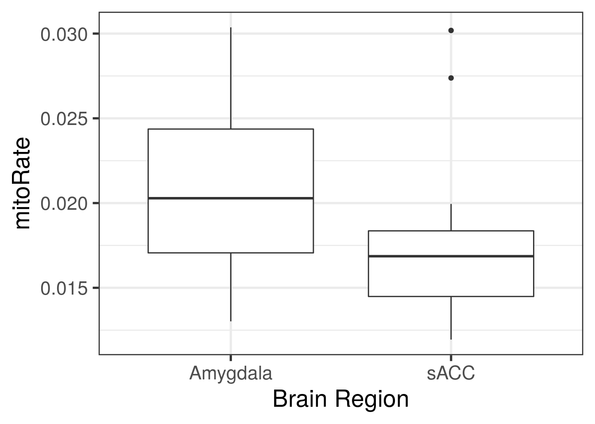

6 Revisión
- ¿Debemos explorar las relaciones entre nuestras variables con información de nuestras muestras previo a hacer un análisis de expresión diferencial?
- ¿Por qué usamos el paquete
edgeR? - ¿Por qué es importante el argumento
sort.byentopTable()? - ¿Por qué es importante el argumento
coefentopTable()?
Usemos los datos de http://research.libd.org/SPEAQeasy-example/bootcamp_intro
speaqeasy_data <- file.path(tempdir(), "rse_speaqeasy.RData")
download.file("https://github.com/LieberInstitute/SPEAQeasy-example/blob/master/rse_speaqeasy.RData?raw=true", speaqeasy_data, mode = "wb")
library("SummarizedExperiment")
load(speaqeasy_data, verbose = TRUE)## Loading objects:
## rse_generse_gene## class: RangedSummarizedExperiment
## dim: 60609 40
## metadata(0):
## assays(1): counts
## rownames(60609): ENSG00000223972.5 ENSG00000227232.5 ... ENSG00000210195.2 ENSG00000210196.2
## rowData names(10): Length gencodeID ... NumTx gencodeTx
## colnames(40): R13896_H7JKMBBXX R13903_HCTYLBBXX ... R15120_HFY2MBBXX R15134_HFFGHBBXX
## colData names(67): SAMPLE_ID FQCbasicStats ... AgeDeath BrNum- ¿Cuantos genes y muestras tenemos en estos datos?
6.1 Ejercicio en equipo
- ¿Hay diferencias en
totalAssignedGeneomitoRateentre los grupos de diagnosis (PrimaryDx)? - Grafica la expresión de SNAP25 para cada grupo de diagnosis.
- Sugiere un modelo estadistico que podríamos usar en una análisis de expresión diferencial. Verifica que si sea un modelo full rank. ¿Cúal sería el o los coeficientes de interés?
6.2 Respuestas
## Exploremos la variable de PrimaryDx
table(rse_gene$PrimaryDx)##
## Bipolar Control Other
## 20 20 0## Eliminemos el diagnosis "Other" porque no tiene información
rse_gene$PrimaryDx <- droplevels(rse_gene$PrimaryDx)
table(rse_gene$PrimaryDx)##
## Bipolar Control
## 20 20## Exploremos numéricamente diferencias entre grupos de diagnosis para
## varias variables
with(colData(rse_gene), tapply(totalAssignedGene, PrimaryDx, summary))## $Bipolar
## Min. 1st Qu. Median Mean 3rd Qu. Max.
## 0.09529 0.24454 0.29773 0.28867 0.34662 0.38358
##
## $Control
## Min. 1st Qu. Median Mean 3rd Qu. Max.
## 0.1384 0.2575 0.2895 0.2984 0.3537 0.4073with(colData(rse_gene), tapply(mitoRate, PrimaryDx, summary))## $Bipolar
## Min. 1st Qu. Median Mean 3rd Qu. Max.
## 0.01297 0.01555 0.01735 0.01818 0.01980 0.03019
##
## $Control
## Min. 1st Qu. Median Mean 3rd Qu. Max.
## 0.01194 0.01564 0.01911 0.02029 0.02439 0.03037## Podemos hacer lo mismo para otras variables
with(colData(rse_gene), tapply(mitoRate, BrainRegion, summary))## $Amygdala
## Min. 1st Qu. Median Mean 3rd Qu. Max.
## 0.01302 0.01706 0.02029 0.02097 0.02437 0.03037
##
## $sACC
## Min. 1st Qu. Median Mean 3rd Qu. Max.
## 0.01194 0.01449 0.01686 0.01749 0.01836 0.03019## Podemos resolver la primeras preguntas con iSEE
if (interactive()) iSEE::iSEE(rse_gene)
## O hacer graficas nosotros mismos. Aquí les muestro una posible respuesta
## con ggplot2
library("ggplot2")
ggplot(
as.data.frame(colData(rse_gene)),
aes(y = totalAssignedGene, group = PrimaryDx, x = PrimaryDx)
) +
geom_boxplot() +
theme_bw(base_size = 20) +
xlab("Diagnosis")
ggplot(
as.data.frame(colData(rse_gene)),
aes(y = mitoRate, group = PrimaryDx, x = PrimaryDx)
) +
geom_boxplot() +
theme_bw(base_size = 20) +
xlab("Diagnosis")
## Otras variables
ggplot(
as.data.frame(colData(rse_gene)),
aes(y = mitoRate, group = BrainRegion, x = BrainRegion)
) +
geom_boxplot() +
theme_bw(base_size = 20) +
xlab("Brain Region")
## Encontremos el gene SNAP25
rowRanges(rse_gene)## GRanges object with 60609 ranges and 10 metadata columns:
## seqnames ranges strand | Length gencodeID ensemblID gene_type
## <Rle> <IRanges> <Rle> | <integer> <character> <character> <character>
## ENSG00000223972.5 chr1 11869-13670 + | 1735 ENSG00000223972.5 ENSG00000223972 transcribed_unproces..
## ENSG00000227232.5 chr1 14404-29570 - | 1351 ENSG00000227232.5 ENSG00000227232 unprocessed_pseudogene
## ENSG00000278267.1 chr1 17369-17436 - | 68 ENSG00000278267.1 ENSG00000278267 miRNA
## ENSG00000243485.5 chr1 29554-31097 + | 1021 ENSG00000243485.5 ENSG00000243485 lncRNA
## ENSG00000284332.1 chr1 30366-30503 + | 138 ENSG00000284332.1 ENSG00000284332 miRNA
## ... ... ... ... . ... ... ... ...
## ENSG00000198695.2 chrM 14149-14673 - | 525 ENSG00000198695.2 ENSG00000198695 protein_coding
## ENSG00000210194.1 chrM 14674-14742 - | 69 ENSG00000210194.1 ENSG00000210194 Mt_tRNA
## ENSG00000198727.2 chrM 14747-15887 + | 1141 ENSG00000198727.2 ENSG00000198727 protein_coding
## ENSG00000210195.2 chrM 15888-15953 + | 66 ENSG00000210195.2 ENSG00000210195 Mt_tRNA
## ENSG00000210196.2 chrM 15956-16023 - | 68 ENSG00000210196.2 ENSG00000210196 Mt_tRNA
## Symbol EntrezID Class meanExprs NumTx gencodeTx
## <character> <integer> <character> <numeric> <integer> <character>
## ENSG00000223972.5 DDX11L1 <NA> InGen 0.00347263 2 ENST00000456328.2;EN..
## ENSG00000227232.5 WASH7P <NA> InGen 1.57167877 1 ENST00000488147.1
## ENSG00000278267.1 MIR6859-1 <NA> InGen 7.74437941 1 ENST00000619216.1
## ENSG00000243485.5 MIR1302-2HG <NA> InGen 0.01403484 2 ENST00000473358.1;EN..
## ENSG00000284332.1 MIR1302-2 <NA> InGen 0.00000000 1 ENST00000607096.1
## ... ... ... ... ... ... ...
## ENSG00000198695.2 MT-ND6 4541 InGen 182.92863 1 ENST00000361681.2
## ENSG00000210194.1 MT-TE <NA> InGen 9.80684 1 ENST00000387459.1
## ENSG00000198727.2 MT-CYB 4519 InGen 826.87424 1 ENST00000361789.2
## ENSG00000210195.2 MT-TT <NA> InGen 276.37225 1 ENST00000387460.2
## ENSG00000210196.2 MT-TP <NA> InGen 366.58138 1 ENST00000387461.2
## -------
## seqinfo: 25 sequences from an unspecified genome; no seqlengths## En este objeto los nombres de los genes vienen en la variable "Symbol"
i <- which(rowRanges(rse_gene)$Symbol == "SNAP25")
i## [1] 54098## Para graficar con ggplot2, hagamos un pequeño data.frame
df <- data.frame(
expression = assay(rse_gene)[i, ],
Dx = rse_gene$PrimaryDx
)
## Ya teniendo el pequeño data.frame, podemos hacer la gráfica
ggplot(df, aes(y = log2(expression + 0.5), group = Dx, x = Dx)) +
geom_boxplot() +
theme_bw(base_size = 20) +
xlab("Diagnosis") +
ylab("SNAP25: log2(x + 0.5)")
## https://bioconductor.org/packages/release/bioc/vignettes/scater/inst/doc/overview.html#3_Visualizing_expression_values
scater::plotExpression(
as(rse_gene, "SingleCellExperiment"),
features = rownames(rse_gene)[i],
x = "PrimaryDx",
exprs_values = "counts",
colour_by = "BrainRegion",
xlab = "Diagnosis"
)
## Para el model estadístico exploremos la información de las muestras
colnames(colData(rse_gene))## [1] "SAMPLE_ID" "FQCbasicStats" "perBaseQual"
## [4] "perTileQual" "perSeqQual" "perBaseContent"
## [7] "GCcontent" "Ncontent" "SeqLengthDist"
## [10] "SeqDuplication" "OverrepSeqs" "AdapterContent"
## [13] "KmerContent" "SeqLength_R1" "percentGC_R1"
## [16] "phred20-21_R1" "phred48-49_R1" "phred76-77_R1"
## [19] "phred100-101_R1" "phredGT30_R1" "phredGT35_R1"
## [22] "Adapter50-51_R1" "Adapter70-71_R1" "Adapter90_R1"
## [25] "SeqLength_R2" "percentGC_R2" "phred20-21_R2"
## [28] "phred48-49_R2" "phred76-77_R2" "phred100-101_R2"
## [31] "phredGT30_R2" "phredGT35_R2" "Adapter50-51_R2"
## [34] "Adapter70-71_R2" "Adapter90_R2" "bamFile"
## [37] "trimmed" "numReads" "numMapped"
## [40] "numUnmapped" "overallMapRate" "concordMapRate"
## [43] "totalMapped" "mitoMapped" "mitoRate"
## [46] "totalAssignedGene" "gene_Assigned" "gene_Unassigned_Unmapped"
## [49] "gene_Unassigned_Read_Type" "gene_Unassigned_Singleton" "gene_Unassigned_MappingQuality"
## [52] "gene_Unassigned_Chimera" "gene_Unassigned_FragmentLength" "gene_Unassigned_Duplicate"
## [55] "gene_Unassigned_MultiMapping" "gene_Unassigned_Secondary" "gene_Unassigned_NonSplit"
## [58] "gene_Unassigned_NoFeatures" "gene_Unassigned_Overlapping_Length" "gene_Unassigned_Ambiguity"
## [61] "rRNA_rate" "BrainRegion" "Race"
## [64] "PrimaryDx" "Sex" "AgeDeath"
## [67] "BrNum"## Podemos usar región del cerebro porque tenemos suficientes datos
table(rse_gene$BrainRegion)##
## Amygdala sACC
## 20 20## Pero no podemos usar "Race" porque son solo de 1 tipo
table(rse_gene$Race)##
## CAUC
## 40## Ojo! Acá es importante que hayamos usado droplevels(rse_gene$PrimaryDx)
## si no, vamos a tener un modelo que no sea _full rank_
mod <- with(
colData(rse_gene),
model.matrix(~ PrimaryDx + totalAssignedGene + mitoRate + rRNA_rate + BrainRegion + Sex + AgeDeath)
)
## Exploremos el modelo de forma interactiva
if (interactive()) {
## Tenemos que eliminar columnas que tienen NAs.
info_no_NAs <- colData(rse_gene)[, c(
"PrimaryDx", "totalAssignedGene", "rRNA_rate", "BrainRegion", "Sex",
"AgeDeath", "mitoRate", "Race"
)]
ExploreModelMatrix::ExploreModelMatrix(
info_no_NAs,
~ PrimaryDx + totalAssignedGene + mitoRate + rRNA_rate + BrainRegion + Sex + AgeDeath
)
## Veamos un modelo más sencillo sin las variables numéricas (continuas) porque
## ExploreModelMatrix nos las muestra como si fueran factors (categoricas)
## en vez de continuas
ExploreModelMatrix::ExploreModelMatrix(
info_no_NAs,
~ PrimaryDx + BrainRegion + Sex
)
## Si agregamos + Race nos da errores porque Race solo tiene 1 opción
# ExploreModelMatrix::ExploreModelMatrix(
# info_no_NAs,
# ~ PrimaryDx + BrainRegion + Sex + Race
# )
}¿Quieres más datos? Tenemos muchos en LIBD incluyendo http://eqtl.brainseq.org/phase2/.